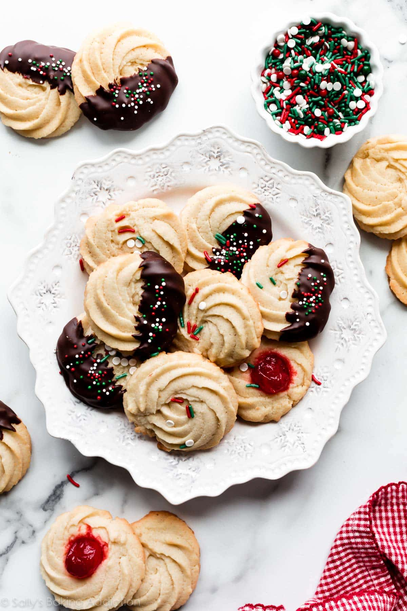

Fig.1 Crumbly and soft sugar cookies piped from a bag to make a sweet pattern. So fun to dip in chocolate! Image from Sally's Baking Addiction
Directions
Whip together butter and sugar. Add vanilla and almond extract. Next whip in the egg and milk.
Dry ingredients get added next. Chill the dough then add to a piping bag.
Pipe into desired shapes and bake at 350°F for 12-15 minutes.
Once cool add optional toppings as desired!
Ingredients
226g Unsalted Butter
150g Granulated Sugar
1 and 1/2 teaspoons Pure Vanilla Extract
1 teaspoon Almond Extract
1 large Egg, at room tempurature
281g All-Purpose Flour
1/2 teaspoon Salt
1-2 Tablespoons (15-30ml) Milk
45g Buttermilk
Optional Toppings
4 ounces Semi-Sweet Chocolate, finely chopped
Maraschino Cherries
Sprinkles or Coarse Sugar
Please check out the source of the recipe and image below!